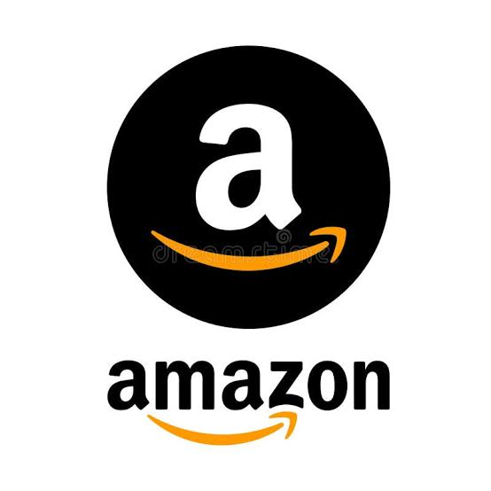
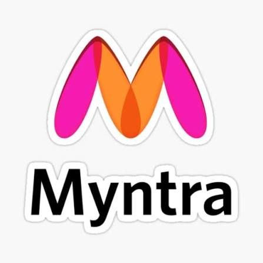
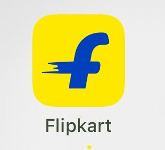
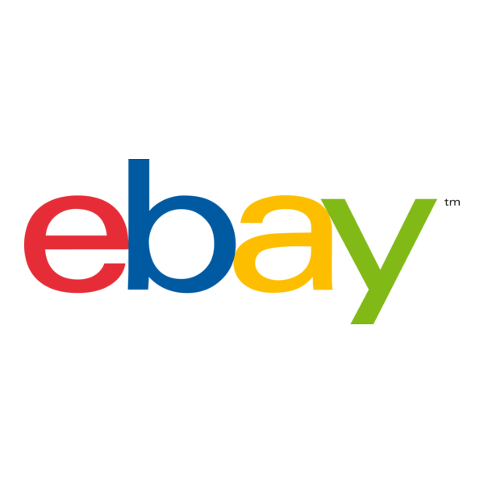
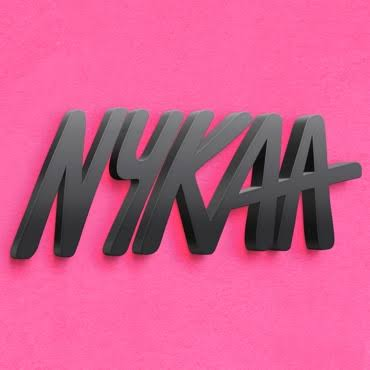
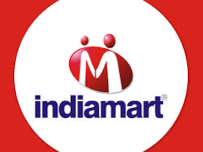
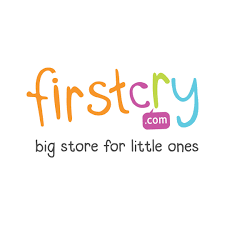
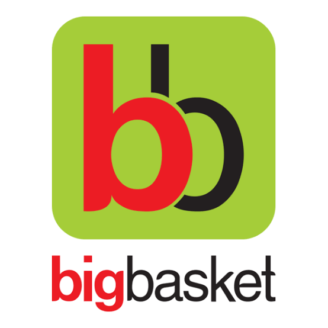

Some Famous E-Commerce Details
| Logo |
About |
Founder |
Link |
 |
Amazon India is a massive multi-category digital marketplace that commands a leading share of online traffic in the country. Officially entering the Indian market in 2013, the platform caters heavily to local shoppers through its localized app and robust logistics engine. It lists an incredibly vast selection of products including consumer tech, domestic home supplies, health accessories, and books. The platform's immense success is anchored by its Prime membership program, which drives customer loyalty with guaranteed same-day or next-day deliveries, exclusive deals, and digital streaming options. Its Fulfilled by Amazon (FBA) network enables local small businesses to scale operations smoothly across India. |
Founder: Jeff Bezos |
Amazon |
 |
Myntra is the undisputed leader in India's dedicated online fashion and lifestyle retail sector. Originally established as a personalized gifting site in 2007, it shifted focus entirely to apparel and was later acquired by the Flipkart Group. The digital portal provides millions of users with access to an extensive assortment of clothing, high-street footwear, and cosmetic essentials from thousands of national and international premium brands. Known for its sleek user interface, comprehensive style guides, and seamless digital return window, Myntra continues to set benchmarks in fashion merchandising, organizing massive viral sales events like the End of Reason Sale (EORS). |
Founders: Mukesh Bansal, Ashutosh Lawania, and Vineet Saxena |
Myntra |
 |
Flipkart is India's premier homegrown e-commerce marketplace and one of the largest players in the country’s digital retail ecosystem. Founded in 2007 as a small online bookstore, it revolutionized Indian e-commerce by introducing consumer-centric innovations such as Cash-on-Delivery (CoD) and dedicated product warranties. Now a subsidiary of retail giant Walmart, the platform caters to hundreds of millions of users by offering a diverse product catalog ranging from smartphones and televisions to lifestyle apparel and furniture. It features advanced localized search options and the newly launched quick-commerce service, Flipkart Minutes, targeting immediate consumer needs across tier-1, tier-2, and tier-3 cities. |
Founders: Sachin Bansal and Binny Bansal |
Flipkart |
|
AJIO is a prominent fashion-focused e-commerce destination owned and operated by India's largest retail conglomerate, Reliance Retail. Launched commercially in 2016, the digital platform serves trend-conscious millennial and Gen-Z demographics by curation of trendy lifestyle wardrobes, traditional ethnic garments, and premium accessories. The portal stands out by listing a huge inventory of international brands alongside its successful in-house private labels like Trends. Leveraging the massive physical retail infrastructure and logistics network of Reliance, AJIO provides quick delivery turnarounds, deep localized discounts, and an innovative creative portal named Ajiogram that spotlights rising direct-to-consumer fashion brands. |
Founder: Mukesh Ambani (via Reliance Retail) |
Ajio |
 |
Meesho is an incredibly popular social commerce marketplace that has emerged as India's fastest-growing e-commerce platform. Launched with the specific intent of empowering small manufacturers and home-based entrepreneurs, the platform gained explosive mass popularity by charging a zero-commission seller model. It allows individuals to market and distribute unbranded clothing, home decor, and daily accessories directly through social media channels like WhatsApp and Instagram. By targeting price-sensitive consumers in Tier-2 and Tier-3 cities, Meesho has democratized digital commerce, racking up billions of downloads and capturing a massive share of the regional retail transaction volume. |
Founders: Vidit Aatrey and Sanjeev Barnwal |
Meesho |
 |
eBay is one of the oldest and most successful Consumer-to-Consumer (C2C) and Business-to-Consumer (B2C) e-commerce websites in the world. Established in 1995, it built its massive reputation by pioneering a unique online auction format that allows users to bid on rare collectibles, used electronics, and second-hand items. Over the decades, it evolved to accommodate traditional "Buy It Now" fixed-price listings, transforming into a diverse marketplace for individual entrepreneurs and established commercial brands alike. The platform maintains its enduring global popularity by providing robust buyer protection systems against scammers and offering a highly secure, cross-border trading platform where merchants can easily offload inventory. |
Founder: Pierre Omidyar |
Ebay |
 |
Nykaa is the dominant digital-first player in India's multi-billion-dollar online beauty, personal care, and wellness market. Established in 2012 by investment banker turned entrepreneur Falguni Nayar, the brand effectively solved the widespread issue of counterfeit makeup products by moving away from traditional marketplace sourcing and adopting an inventory-led model. This approach guarantees 100% authentic cosmetics, professional skincare lines, hair care solutions, and fragrances sourced straight from international and domestic manufacturers. Nykaa has since grown into an omni-channel ecosystem, operating luxury brick-and-mortar storefronts across major Indian metropolitan areas alongside its specialized retail apps, Nykaa Man and Nykaa Fashion. |
Founder: Falguni Nayar |
Nykaa |
 |
IndiaMART is India's largest and most trusted Business-to-Business (B2B) digital marketplace, focusing on industrial procurement and commercial supplier discovery. Launched all the way back in 1996, it serves as an interactive online directory connecting small and medium enterprise (SME) manufacturers directly with bulk institutional buyers. The catalog ranges from heavy processing machinery and medical essentials to bulk fabrics and chemical raw components. By offering zero-commission free listings for manufacturers and highly transparent vendor verification badges, it commands over half of the country's domestic online B2B market share, facilitating millions of trade inquiries monthly. |
Founders: Dinesh Agarwal and Brijesh Agrawal |
IndiaMart |
 |
FirstCry is India's undisputed largest pure-play e-commerce marketplace specializing in products for babies, young children, and expectant mothers. Founded in 2010, the company addresses the highly specific childcare market by maintaining an immense catalog containing over a million distinct items including diapers, kids' apparel, nursing gear, and developmental toys from trusted global brands. The company operates a very successful omni-channel distribution framework, blending its dominant internet platform with over a thousand franchise storefronts across various states. Following a highly anticipated domestic public listing (IPO) in August 2024, FirstCry continues to scale its presence as the absolute primary shopping hub for Indian parents. |
Founders: Supam Maheshwari and Amitava Saha |
Firstcry |
 |
BigBasket is India's absolute pioneer in large-scale online grocery retail and daily household essential fulfillment. Founded in 2011 and currently managed under the Tata Digital conglomerate ecosystem, it services consumers across more than a hundred Indian cities. The platform specializes in managing temperature-controlled logistics to deliver fresh farm produce, dairy goods, gourmet foods, and cleaning supplies directly to residences. To counter the heavy disruption caused by ultra-fast dark store models, BigBasket has integrated a specialized quick-commerce wing, guaranteeing the hyper-local delivery of groceries and lifestyle items within just ten to fifteen minutes. |
Founders: Hari Menon, VS Sudhakar, Vipul Parekh, Abhinay Choudhari, and VS Ramesh |
BisBasket |